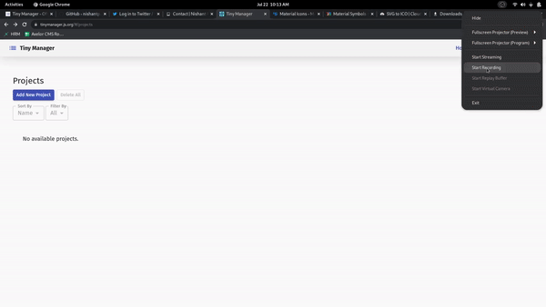

English - Français - Español - Pусский - Deutsch - हिंदी - 中文 - 日本語
A simple offline project manager for your pet projects.
Tiny Manager is an offline first simple application that assists you in managing your pet projects. Along with project management it allows mundane management using todos and a simple notepad application, all at one place.
Bundled with essential features it allows quick and easy management of your projects.
Start Using NowFeatures
A few of the things you can do with Tiny Manager:
- Add, Edit, Save Notes
- Add, Edit, Delete Todos
- Pet Project management
- Project completion status
- Filtering and sorting
- Issues priority setting
- Dark Mode
- Localization Support
- Offline capable
- Offline local storage
Privacy and Usage
The application makes use of local storage for persisting your work data and does not store any Tiny Manager data on any sort of server. The application uses Google analytics to get an overview of the application usage.
Feedback or Suggestion
Kindly submit your feedbacks or suggestion for any improvements, bugs and fixes.
Submit Now